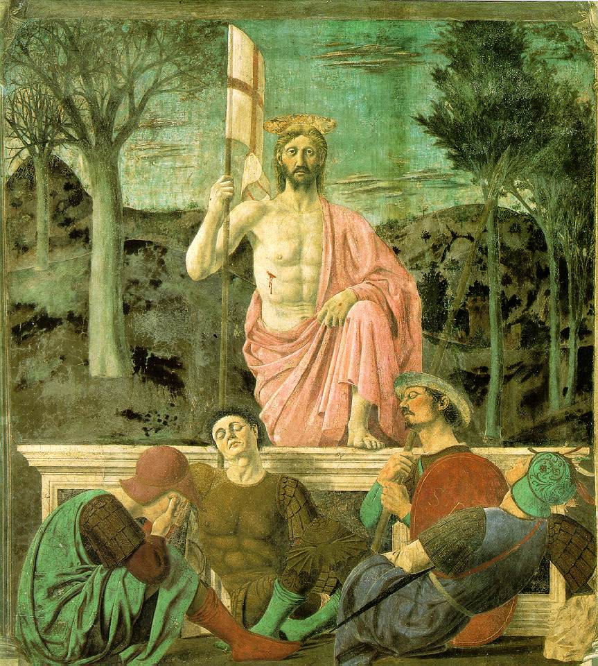

The geometry behind the painting

Educational guides added.
The geometry behind the painting
1 · The ceiling — yellow
This rectangular ceiling compartment is seen in perspective: its receding sides appear to approach one another. Piero makes a flat surface suggest a space with depth.
2 · The column’s axis — green
This vertical line runs through the statue, the column and the area occupied by Christ. It highlights their alignment and gives the scene a stable structure.
3 · The paving — purple
Pale marble bands organise the floor. The purple outline marks one strip of paving: its sides run towards the vanishing point. This geometric network helps us perceive distances.
P · The vanishing point — red
The red lines extend edges of the ceiling and floor that recede away from us. They converge at P, on the blue horizon line, which marks the viewer’s eye level. Notice that it lies to the right of Christ: the main figure is not the focus of the perspective construction!
Takeaway
For Piero, both painter and mathematician, geometry creates depth and helps bring balance to the image.